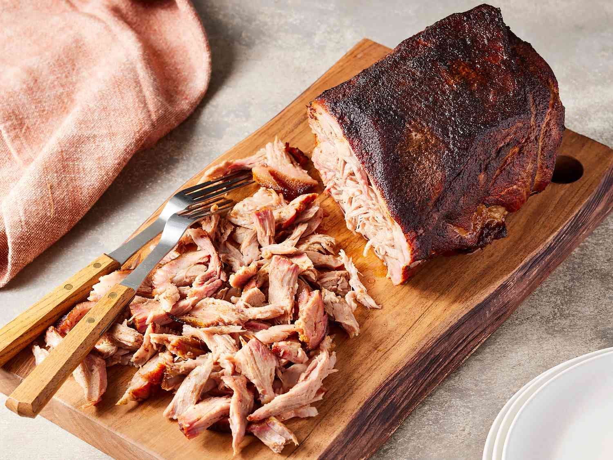

Smoked Pork Butt
Home

Overview
Smoked pork butt is a barbecue classic, tender, juicy, and full of smoky flavor. This cut, also known as pork shoulder, is slowly cooked until it's melt-in-your mouth tender with a rich, caramelized bark on the outside. Perfect for pulling apart and serving in sandwiches, tacos, or straight off the smoker.
Ingredients
- 4 tablespoons packed brown sugar
- 2 tablespoons ground New Mexico chili powder
- 7 pounds fresh pork butt roast
Steps
- If desired, soak pork butt in a brine solution for at least 4 hours or overnight. You should do this covered and in the refrigerator.
- Preheat an outdoor smoker 200-225 degrees F. Place a roasting rack in a drip pan. While grill preheats, in a small bowl, combine the brown sugar, chili powder and any additional seasonings to your taste.
- Apply this liberally to the meat and rub it in with your fingers.
- Place a roasting rack in a drip pan and lay the meat on the rack.
- Smoke at 200-225 degrees F for 6 to 18 hours, or until internal pork temperature reaches 145 degrees F.